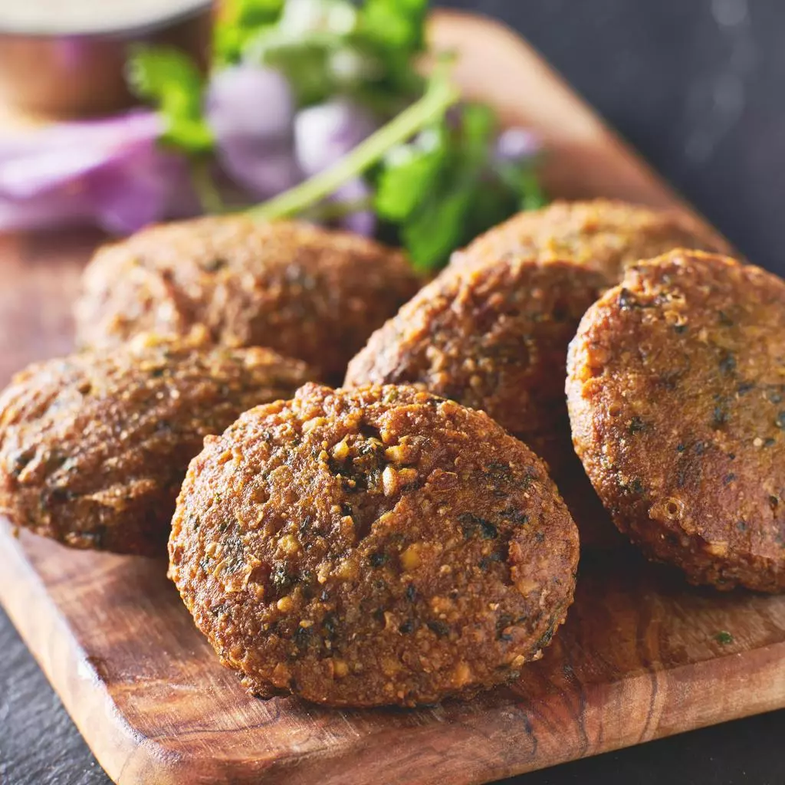

Even though these protein-packed chickpea fritters are listed as one of Israel's national dishes, and are a staple in many Middle Eastern countries including Palestine and Lebanon, it is often suggested that falafel might have evolved from the Egypt dish known as taameya. By the 1950s, to earn a living, Yemenite immigrants in Israel started making falafel in the streets, selling it wrapped in paper, which has eventually transformed this ancient dish into an early form of Israeli fast food and facilitet the global recognition of it.
Meal prep time : 12 hours 40 minutes
Servings : 12